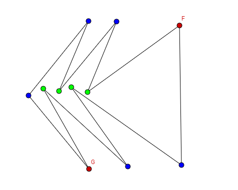
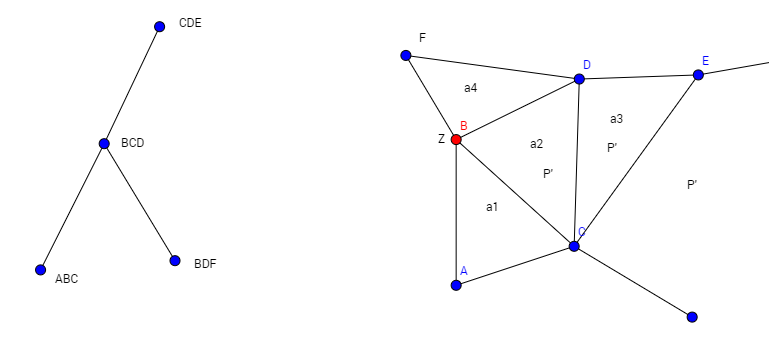
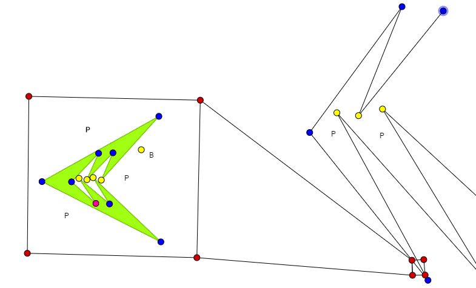
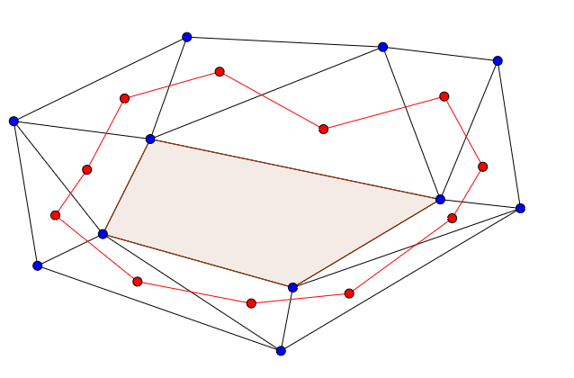
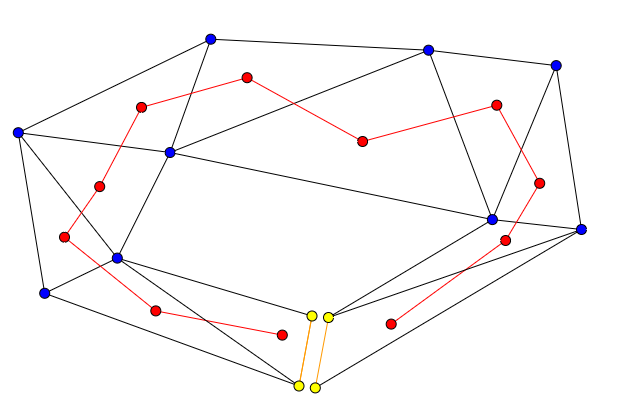
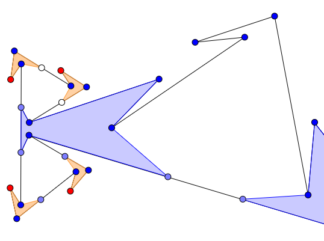
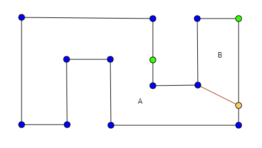
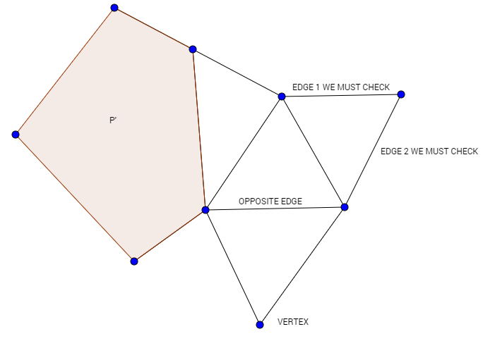

We first have a very important result we will use many times in the following theorems.
It is the simplest case, but, as in many cases in mathematics, it provides a strong 'block' to be able to build the next results easily.
The theorem has two parts, the second one being the most significant.
1. Given a simple polygon P, \(\left\lfloor \frac{n}{2}\right\rfloor -1\) beacons are sometimes necessary to route between any pair of points in P.
Proof
It is sufficient to provide an example of a simple polygon in which we would need \(\left\lfloor \frac{n}{2}\right\rfloor -1\) beacons to route between
any pair of points in P, focusing on an extreme pair.

Figure 0.
In figure 1, we can see a simple polygon of 11 vertices. If we look at points G and F, to be able to take G to F’s position we will have
to place 4 beacons in the green vertices. This is caused by the fact that G will tend to get stuck in every spike during its journey to F,
so we must place one beacon per spike, 4 in total (\(\left\lfloor \frac{11}{2}\right\rfloor -1=5-1=4\)).
2. Given a simple polygon P, \(\left\lfloor \frac{n}{2}\right\rfloor -1\) beacons are always sufficient to route between any pair of points in P.
Proof
We will present an algorithm to place \(\left\lfloor \frac{n}{2}\right\rfloor -1\) beacons in any simple polygon in such a way we can route between any pair of points in it.
Firstly, we will triangulate the polygon. Considering this triangulation, we will peel off triangles starting with an extreme triangle
(lowest leaf of the dual graph associated to that triangulation) in each iteration. These removed triangles will mean “routed territory”, that
is to say, a part of the polygon in which we can route between any pair of points with the beacons already placed.
There will be two types of extremes triangles a = ABC, as shown below:
Figure 1: ABC is a single leaf, as BCD has no more children. The rest of P is located via CDE.
Figure 2: BCD has two children, ABC and BDF. The rest of P is located via CDE as before.
How are we going to place the beacons in our peeling off?
In the case of figure 1, we will put a beacon Z in C. This way, any point in the three triangles can navigate to Z if attracted by it and vice versa.
We note it will be analogous if we had a hypothetic BDE instead of CDE.
The second case is a bit more complicated, as we have to consider 4 triangles instead of 3. Here we will use something stronger than attraction, visibility,
which will be useful afterwards. Then we cannot put Z in C, as F may be to the left of line BC. But, considering the point B, we will be able to see triangles
ABC and BDF from it. Therefore we could put a beacon Z in B and we would have visibility over every triangle shown in the figure except DCE, but this will not
affect the future proof. All in all, every point before segment CD will be visible to Z and therefore every point could be routed to or from Z. (*)
Now, how does the algorithm work?
Recursively, we will choose an extreme triangle and we will place a beacon Z as described above. Then we will peel off some triangles depending on the case.
Here we must define the base cases and the inductive step.
If P is a single triangle or two triangles, we do nothing.
If our chosen triangle is in case 1 (figure 3), we will place the beacon as seen above. This beacon will make possible routing between any pair of
points in the triangles. In this case, we peel off ABC (a1) and BCD (a2), getting a new simple polygon P’. We know we can route between any pair of points
contained in the peeled part and also contained in P’ by induction hypothesis. So we just need to check if we can navigate from a point t in (a1 u a2) to a
point s in P', therefore P would be “beaconizable”. But we can do this easily by first routing from t to Z and then from Z to s by induction hypothesis.
Figure 3.
If our chosen triangle is in case 2 (figure 4), we will place the beacon as seen above. Now we peel off ABC (a1) and BDF (a4), getting a simple P’.
Now our separation lines will be BC and BD. We know we can navigate without problems within triangles a1 and a4 separately, and within P’ by induction.
What happens in this case if we want to route between a point t in the peeled part and a point s in P’? We can route from t to Z and then from Z to s by
induction hypothesis, with s being situated either in a1 or a4. The last case to consider would be having t and s in a1 and a4 respectively, and we could
obviously route from one to another just using Z.

Figure 4.
So using this algorithm we see that we remove two triangles each time we place a new beacon. As the number of triangles in the triangulation is n – 2,
with n being the number of vertices, the total number of beacons placed will be at most \(\left\lfloor \frac{n-2}{2}\right\rfloor\), which is the same as \(\left\lfloor \frac{n}{2}\right\rfloor -1\).
Routing in Polygons with Holes
Now we will take a look at polygons with n vertices and h holes.
3. Given a polygon P with n vertices and h holes, \(\left\lfloor \frac{n}{2}\right\rfloor -h-1\) beacons are sometimes necessary to route between a pair of points in P.
Proof
We already know this is clear for \(h=0\). Now, how can we build an example with holes fulfilling this bound? We could use the valid example of figure 0 and
try to adapt it with holes. The important concept in that examples were the spikes, so couldn’t we add more spikes thanks to the holes? We could build holes like
in figure 5, seen in green:
Figure 5.
Then we would need many beacons to get a point s out of the deepest spike of the polygon, 4 in this concrete case. So we will use this idea combined with a polygon
of this very form itself as in figure 0, with 1 hole as seen in figure 6:

Figure 6.
In this example, we can see that we have 1 hole, the main polygon has 11 vertices and the hole part has 12 vertices (11 plus 1 to close it).
Thus we have 23 vertices.
In order to take the red point to what in figure 0 was \(F\), we must first leave the spikes of the hole an then the main spikes. We will need 4 beacons to dodge the main
spikes as seen in figure 0, plus 4 for the hole spikes (same reasoning). But we have to add another one, \(B\) in figure 6, to be able to finally leave the hole when the
first of the main spike beacons gets activated. So we will need 9 beacons in total and we have that \(\left\lfloor \frac{23}{2}\right\rfloor -1-1=11-2=9\).
We have presented a successful example with 1 hole, and we could repeat this method recursively to generalize this situation to \(h\) holes.
4. Given a polygon \(P\) with n vertices and \(h\) holes, \(\left\lfloor \frac{n}{2}\right\rfloor +h-1\) beacons are always sufficient to route between a pair of points in \(P\).
Proof
As in the theorem for simple polygons, we first triangulate the polygon and consider the dual graph of the triangulation. This dual graph, as \(P\) is not
simple, may have cycles, as seen in figure 7:

Figure 7.
What we will do know is to get rid of these cycles by removing an edge of each cycle: we add two vertices very close to those of the edge, hence creating a very thin artificial channel in order to remove the hole (figure 8).

Figure 8.
When we do this we get a connected graph without cycles, and we have to do it h times, adding \(2h\) vertices and getting a simple polygon of \(2h+n\) vertices.
Now we can use the result of theorem 2, because the position of the new vertices does not affect routing in any way (as they are as close as we want to the old
vertices). Thus we have that it can be routed with \(\left\lfloor \frac{2h+n}{2}\right\rfloor -1=\left\lfloor \frac{n}{2}\right\rfloor +h-1\) beacons.
Routing in Simple Orthogonal Polygons
Here we will just present a better bound to the necessary number of beacons to route between two points in a simple orthogonal polygon. We note that theorems 1
and 2 are applicable to this kind of polygons.
4. Given a polygon P with n vertices and h holes, int( n/2 ) + h - 1 beacons are always sufficient to route between a pair of points in P.
Proof
As always, we will give an example to prove that there exists a polygon with those characteristics fulfilling the statement.
In this case, we have a very simple, orthogonal polygon with 12 vertices and needing just int(12/4) – 1 = 3 – 1 = 2 beacons to route, looking at two extreme points
C and K:
Figure 9.
(*) Mistake found in the article Combinatorics of Beacon-Based Routing and Coverage
In this article, which is the fundamental basis of this section, the algorithm depicted to build the proof for theorem 2 has a flaw.
In the case 2 of these algorithm, the beacon Z is placed somewhere in the segment CD, in order to be able to peel off three triangles instead of two,
because “there always exists a point in the segment CD from which we will be able to see the entire pentagon ACDFB”. But this is not true as the next figure shows:
This flaw does not seem to be easily solved if we want to peel off these three triangles, but it certainly could be avoided by just peeling two triangles as we did
in our proof in this section, which does not affect the result of the theorem.
Coverage
What does coverage of a polygon mean? A polygon is covered by a set of beacons if every point of the polygon is attracted by at least one of the beacons.
We note that this is a different condition to routing, although these two concepts are related. Routing is a strongest condition, so every routed polygon is also
covered, but we do not have the opposite implication. Therefore, we will need fewer points to cover, generally, than when we routed.
We will remember two important simple concepts that will be very useful in this section. The attraction region and the inverse attraction region.
The attraction region of a point A is the set of points in P that are attracted by A (they are able to reach A when this point is activated as a beacon).
Inversely, the inverse attraction region of a point B is the set of points in P that can attract B when they are activated as beacons.
Now we can define the coverage saying that a polygon P is covered by a set of beacons if and only if P is contained in the union of the attraction regions of the beacons in the set.
‘Sometimes Necessary’ Bound
First, we will focus on giving a lower bound on the number of beacons sometimes necessary to cover arbitrarily large polygons.
3. Given a simple polygon P with n vertices, we may need arbitrarily close to int( 4n/13 ) beacons to cover P.
Proof
In order to prove this, we will present a specifically designed example on which we will have to use “many” beacons to cover. Again, as we did in routing too, the concept of spike will be proved very useful and we will use it intensively, as spikes prevent the points to reach the activated beacons due to the longer path they have to travel.
Figure 10.
In figure 10 we can see that the inverse attraction regions of the vertex in red (shadowed) are disjoint, so we will at least 3 beacons to cover it (one in each zone). We will need 3 beacons for a polygon of 9 vertices.
Now we will try to extend this example to make a family of polygons with n vertices.
Due to the angles of the spikes, it is not easy to replicate more spikes and extend the polygon in a suitable way to n. What we will do is to combine the spikes recursively to form a fractal polygon complex enough to give us the desired bound.
We will now define the concepts of “angled –in” polygon and “angled-out” polygon. An angled-in spike polygon would have the “main” shape of Figure 10, and want we will do is to combine two of these polygons to create an angled out polygon as depicted in the figure 11:
Figure 11.
We can see that we have removed one spike of each angled-in polygon in order to “glue” them, forming an angled-out polygon. How do continue with the recursion? It is very important to note that the blue shaded part of the above polygon will be a spike of another angled-in polygon, therefore completing the recursion, as seen in figure 12:

Figure 12.
So we build our family of polygons like this. In the next iteration, we would remove the white spike of figure 12 and with two copies of the angled-in polygon we would create another angled-out polygon, and so on.
Now we have to count the vertices and the independent points we have in the family. What is an independent point? The red points seen in the figures which make us put beacons next to them.
If we start with an angled-in polygon with n vertices and we follow the process seen above to create another bigger angled-in polygon, how many vertices will this new polygon have? We will start with a polygon with one more vertex in order to simplify the counting:
Figure 13.
First we remove one spike, n-2. Then we double the vertices with two copies and merge one edge eliminating two vertex, but we add two to create the angled-out spike as in figure 11, 2n-6+2 = 2n-4. Then we double the vertices again, 4n-8, finally we add four vertices to create the final spike, 4n-4.
What is the number of independent points? If we start with b independent points in an angled-in polygon, first we delete one when removing one spike, then we make two copies, 2b-2. For each two copies, we have an angled-out spike which will give us another independent point, 2b-1. Then, in the final step creating the bigger angled-in polygon, we double the independent points and we finally add another one due to the las spike we add, so in total 4b-1.
Using this information, we know define T(k) as the number of vertices in the family of polygons after k iterations. For example, T(0) would be 10 as seen in figure 13. Now we know that we have:
T(k)=4T(k-1)-4
By easily solving this recursion we have:
T(k)= 1/3 ( 26∙ 4^k+4 )
Similarly, we know define I(k) as the number of independent points in the family of polygons after k iterations. For example, I(0) would be 3 as seen in figure 13. Now we know that we have:
I(k)=4I(k-1)-1
By easily solving this recursion we have:
I(k)= 1/3 ( 8∙ 4^k+1 )
Here we are finally in a good position to end our proof and give a family of polygons with n vertices that will need asymptotically int( 4n/13 ) beacons to cover. This is caused because we have:
lim┬(k→∞)〖(1/3 ( 8∙ 4^k+1 ))/(1/3 ( 26∙ 4^k+4 ))〗= 4/13
So we will just consider our family of polygons and we have the result.
‘Always Sufficient’ Bound
We now take a look at the number of beacons that will be sufficient to cover a polygon P with n vertices and h holes in any case.
As seen at the beginning of this section, due to the relation existing between routing and coverage, the bound found here should be lower than that we reached in routing, which was int( n/2 ) + h – 1.
4. Given a polygon P with n vertices and h holes, int( (n+h)/3 ) beacons are always sufficient to cover P.
Proof
This proof, contrarily to the last one we saw, is far simpler and it is based in the art gallery problem. The art gallery problem indeed solves our problem, since art gallery’s is included in ours, because every guarding of a polygon is also a coverage of the polygon (every point is seen by a guard, so every point would be attracted to this guard without any problem).
The standard solution of the art gallery problem tell us that we can guard a polygon with n vertices and h holes with int( (n+h)/3 ) guards. So we can cover the polygon with int( (n+h)/3 ) beacons.
Coverage in Orthogonql Polygons
Orthogonal polygons are a special kind of polygons, and we can use these special characteristics to get better bounds on coverage.
For example, we know that in the case of orthogonal polygons, the art gallery problem gives us a better bound than int( (n+h)/3 ), int( (n+h)/4 ). So we have that int( (n+h)/4 ) beacons are always sufficient to cover a polygon P with these characteristics.
For the sometimes necessary beacons to cover an orthogonal polygon, we can use the same example we used in “Routing in Orthogonal Polygons”:

Figure 14.
The orthogonal polygon, P, has 12 vertices and just needs 2 beacons to cover, as seen in figure 14. P is divided into parts A and B by the brown line. The first beacon in green attracts every point in part A in the polygon, as the second attracts very point in part B.
This family can be extended (adding 4 vertices each time) and we will have a ‘serpent’ family of orthogonal polygons which require int( (n+4)/8 ) beacons to cover.
Implementation of the Algorithm
Sufficient Beacons
How is the algorithm of Theorem 2 really implemented? It is written in Javascript and using the P5 library. We will use a DCEL in order to keep track of the polygons.
First, we will introduce the simple polygon in clock-wise order and we will press enter. We will keep the vertices in order in a global array. When the polygon has been introduced in its entirety, we initialize the DCEL, setting an inner face and an outer face.
After this, we triangulate the polygon. We have implemented the triangulation using the ear clipping method, i.e. first finding an ear (by traveling through the vertices except the last one because of the Two Ears Problem) and then removing it recursively. During the algorithm, we update the DCEL accordingly.
When we have finished the triangulation, we now can start with the algorithm of theorem 2, but first we make a copy of the DCEL in order not to lose its information when modifying its structure during the upcoming algorithm. We will manage to do everything just using the DCEL.
We have two base cases and then the main step. Base case 1 consist in having just a triangle (2 faces) and we put the beacon in the first vertex. Base case 2 consist in having 2 triangles (3 faces) and we choose to put the beacon in the middle edge, because of the visibility. We are able to do this because we use a function which tell us the number of edges of a given vertex.
Eventually, we have the heart of the algorithm in the main case. We travel the vertices in order to find what will be a leaf in the dual graph, i.e. a vertex with only two edges. When we are there, we identify the vertex’ opposite edge in the triangle. Now we will distinguish between four cases. If we are in one of these cases it will mean that this triangle is effectively a lowest leaf. Testing this is done in constant time, so the algorithm will not slow down excessively.
The first one corresponds to case 1 in the theorem with what will be P’ to the left. We know if we are in this situation by examining the face of the suitable (half)edge and checking in it “faces” the outer face:
If we have this situation, then we know it is a lowest leaf. Then we check if the point where the beacon will be placed has already another previous beacon, if not, we save the new beacon in a global array of beacons. Finally, we delete first the triangle of the vertex and then the triangle containing the edge we check by using a function that deletes “leaf” triangles from the DCEL and we call the algorithm function recursively with this new DCEL.
The second case is analogous to the first one but with P’ to the right.
The third one corresponds to case 2 in the theorem with what will be P’ to the left. In order to check this we will look at two suitable edges as depicted in the next figure:

If both (half)edges “face” the outer face, we know that we are in this situation, and it will be a lowest leaf. We put the beacon in its place after checking repetition and then we remove the two adequate triangles from the DCEL (the vertex triangle and the triangle containing the edges we checked). As done before, we call the algorithm function recursively with the new DCEL.
The fourth case is again analogous to the third one but with P’ to the right.
If we are not in any of these cases, we then know the vertex’ triangle is not a lowest leaf, so we do nothing and just continue the search. We know for sure we will eventually find a lowest leaf.
Beacons to Route
At the same time we perform the calculations to obtain the sufficient beacons from theorem 2, we will also try to select, given two points inside the polygon, an ordered subset of beacons that we could use to route between then. This subset will be contained in the set of beacons from theorem 2.
Firstly, we will get the faces (triangles) both points are located in. Then we will perform some actions, guided by the previous algorithm. We will start and continue with the algorithm until we peel off a triangle that contains one of the points. Then that will mean we have started our path in this direction. We will keep two lists with beacons, with the beacons we have already visited in each direction, as each list of beacons is moving towards the other until they finally meet.
So how do we update the lists? The first beacons of the two lists are those two related to the peeling off of the faces containing the first and the second point, respectively. When we have to peel off two new triangles, we check if any of them is “influenced” by the beacons of a list, more precisely, the last beacon of the list as it is the one which leads the way. What means “influenced”? In this case, touching, i.e. the last beacon of the list is telling us we must take this path. We will keep adding beacons to the lists if the last beacon tell us to, until we eventually crossed paths:
In order to detect when we have “merged” the lists, which is something we know will happen, we will check, for example if we are adding the current beacon to the list 1 (i.e. we are heading towards P2), whether the two triangles we are peeling off are “influenced” by the beacon from the other list, list 2 in the case. If so, this would be the next beacon we would have to add, therefore we have already finished because we have found all the beacons in the path. Once we have found all the beacons required to route, this algorithm has finished.
Finally, we have to arrange the two lists and join them in succession to build the actual path of beacons between the two points. We are done!